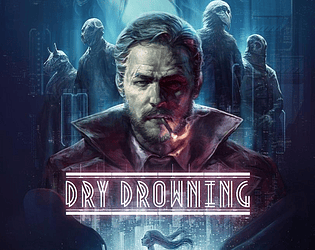

Dry Drowning
Detalhes
|  | |
| Tempo de jogo | Não Jogado |
| Última Atividade | Nunca |
| Adicionado | 30/03/2025 23:13:51 |
| Modificado | 30/03/2025 23:15:10 |
| Status de Conclusão | Not Played |
| Biblioteca | Itch.io |
| Fonte | itch.io |
| Plataforma | PC (Windows) |
| Data de Lançamento | 07/06/2019 |
| Pontuação da Comunidade | 70 |
| Avaliação da crítica | 60 |
| Pontuação do Usuário | |
| Gênero | Adventure Indie Puzzle Visual Novel |
| Desenvolvedor | Studio V |
| Editor | Vigamus Leonardo VLG Publishing |
| Funções | Single Player |
| Links | Official YouTube Steam GOG Itch Twitch |
| Tag | [GGDeals] Synced |
Descrição
Dry Drowning is an investigative thriller-oriented Visual Novel set in the futuristic dystopian universe of Nova Polemos.
A shady socio-political situation dragging everything down to the abyss, a serial killer drawing strength from this darkness, a tormented detective and his assistant craving for redemption.
By following the story of Mordred Foley, unscrupulous private detective haunted by his dark past, the player will be immersed into a series of macabre serial killings.
Dry Drowning challenges the player to find the truth, going through ambiguous characters, riddles, clues and unexpected events, while telling an extremely compelling and mature story.

GAME FEATURES
- Choices really matter: Players choices can lead to an always different story, with more than 150 story branches and 3 completely different endings
- Heavy moral choices: Dramatically change the way you live the game, affecting background politics, technology, environment, NPC encounters, who lives and who dies
- High replayability: More than 20 hours gameplay to see everything about
- Time travel: Explore the detective's flashbacks and investigate cases from the past to help you solve new ones
- Psychological interrogations: Break the masks and uncover the truth with the Living Nightmares system
- Original soundtrack: dynamic OST with more than 50 audio tracks, some of which live recorded, for more than 2 hours of music
- Full controller support: Experience the game using the input device of your choice
Get ready to dive into darkness...
Content warning:
This Game may contain content not appropriate for all ages, or may not be appropriate for viewing at work: Blood & Gore, Cartoon Violence, General Mature Content and Suggestive Themes.